6: Splitting and combining data
Code
Slides
 PDF Slides
PDF SlidesDATA 3464: Fundamentals of Data Processing
Splitting and combining data
Charlotte Curtis September 23, 2026
Topic overview
Adding detail to the process thus far
- Splitting and sampling data
- Some more visualization tricks
- Combining multiple datasets
Resources used:
- Feature Engineering Sections 3.3-3.4
- Hands on Machine Learning with Scikit-Learn and Tensorflow/PyTorch, Chapter 2. Available at MRU Library
The data process to date

- We’ve talked about why to split, but not how
- We might also have more than one table to deal with
How to split your data
- Simple scenario: random sample (typically 70-80% for training)
- Only works if:
- Stratification doesn’t matter
- Data is guaranteed not to change
- Data is not a time-series
How do we know if stratification is necessary?
Sampling bias
Stratification is used to mitigate sampling bias
- Cilantro example: assume 80% of population likes cilantro
- Goal: ensure our sample is representative of the population, \(\pm 5\%\)
The binomial distribution can be used to model the probability of choosing \(k\) people who like cilantro from \(n\) total participants:
\[P(X = k) = \binom{n}{k}p^k(1-p)^{n-k}, \mathrm{where} \binom{n}{k} = \frac{n!}{k!(n-k)!}\]
Sampling bias continued
\(P(X = k)\) is the probability mass function, and the corresponding cumulative distribution function is just the sum up to \(k\):
\[P(X \leq k) = \sum_{i=0}^k \binom{n}{i}p^i(1-p)^{n-i}\]
Suppose we randomly sample 100 people. What is the probability of fewer than 75 79 or more than 85 81 cilantro lovers?
Here I’ve defined an “unbiased sample” as being \(\pm5\%\) of expected of the smallest category (that this is a correction from the version presented in class!)
Stratification approach
The need for stratification depends on sample size, distribution of stratification category, and how much bias you’re willing to accept
Small Sample Size Large Sample Size Unbalanced Classes Stratify Maybe Balanced Classes Maybe Not necessary Stratification categories can be the target variable, or a predictor
Goal is to have the same class distribution in both testing and training
Repeatable randomness
- At minimum, you should always set a random seed so that every time you sample your data it is the same “random sample”
- This isn’t enough if your data might get updated! You can:
- Store the IDs of your split offline, then sample any new data and append to them (ensuring that test/train never mix)
- Get fancy with a deterministic method like hashing features to create unique IDs, then thresholding based on maximum possible value
As usual, we want to avoid data leakage
Back to visualizations
Now that we’ve got a test set safely stashed, we can ask questions about the data and use visualizations and statistics to answer them. Some examples:
- Do any of my features seem to be related to my target?
- Do any of my features seem to be related to each other?
- Why are some values more common than others?
- Do these values make sense in the context of my domain knowledge?
- If I group my data together in some way, are there clear trends?
Some handy tricks
A few things to tweak that can make visualizations easier to read:
- Histogram bin sizes
- Aiming for a smooth distribution that works for your data
- Transparency (
alpha)- Useful for both dense scatter plots and overlapping categories
- “Jitter”
- Mostly for scatter plot of continuous vs categorical data
- Add a tiny bit of random noise to spread out samples
Combining data sources
My assumption: you know all about joins from DATA 2721 and DATA 2402
- Concatenating tables:
pd.concat([list, of, dataframes], axis=??) - Joining to nearest match:
pd.asof - Watch out for datatypes! Dates in particular are a huge pain
datetime[ns]is not the same asdatetime[s]
Coming up next
- No lab this week (Truth and Reconciliation)
- Assignment 1 is due!
- Next topic: Missing data and outliers
- Written test 1 next Thursday